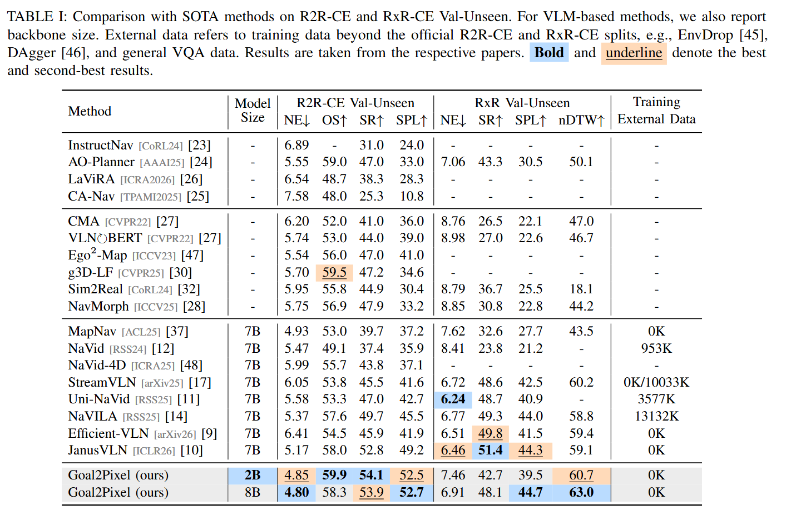

Abstract
Vision-language models (VLMs) have become a common foundation for vision-and-language navigation in continuous environments (VLN-CE). Yet most VLM-based methods cast navigation as low-level action prediction, an interface that is ambiguous, tied to short-horizon motion primitives, and inefficient due to repeated VLM querying. We propose Goal2Pixel, a pure pixel-based paradigm that reformulates VLN-CE as navigable pixel grounding. Rather than predicting actions, Goal2Pixel uses the image plane as a unified spatial interface between VLM reasoning and robot motion: the model predicts a visible navigable pixel, which is back-projected into a 3D waypoint for forward navigation. Non-forward actions are encoded by auxiliary left/right/bottom regions for turning and stopping. To support long-horizon navigation, we propose ViKeyMem, a visibility-aware keyframe memory, achieving a favorable performance–efficiency trade-off while reducing training cost by over 50%. To adapt pretrained VLMs to navigable pixel grounding, we introduce semantic embeddings and coordinate-aware auxiliary losses. Among methods trained without external data, Goal2Pixel achieves competitive state-of-the-art performance on R2R-CE and RxR-CE. On R2R-CE Val-Unseen, it achieves 54.1% SR and 52.5% SPL with only 7.75 VLM calls per episode. Compared with direct action prediction, Goal2Pixel improves SR by 21.2 percentage points while requiring 6× fewer VLM calls.
Contributions
- Goal2Pixel, a pure pixel-based interface that reformulates VLM-based VLN-CE from action prediction to image-space goal grounding.
- ViKeyMem, a compact visibility-aware history representation that selects keyframes based on visibility change with trajectory overlays.
- Lightweight adaptations, including semantic embeddings and coordinate-aware auxiliary losses to improve navigable pixel grounding.
- Goal2Pixel achieves 54.1% / 52.5% on R2R-CE and 48.1% / 44.7% on RxR-CE in SR / SPL. Compared with direct action prediction, our pixel-based paradigm improves R2R-CE SR by 21.2% SR and reduces the average number of VLM calls by about 6x.
Method
Overview of the Goal2Pixel architecture.

Real-World Experiments
16 real-world robot videos.
R2R-CE Qualitative Videos
8 R2R videos.
RxR-CE Qualitative Videos
8 RxR videos.
Experimental Results

Ablation Studies
Output Paradigm

History Representation and ViKeyMem Visualization


Full ViKeyMem Visualization

Component Ablation Study

Maximum Number of Low-Level Execution Steps

Citation
@inproceedings{anonymous2026goal2pixel,
title = {Goal2Pixel: Grounding Goals to Pixels for Vision-Language Navigation},
author = {Anonymous Author(s)},
booktitle = {IEEE International Conference on Robotics and Automation},
year = {2026},
note = {Under review}
}